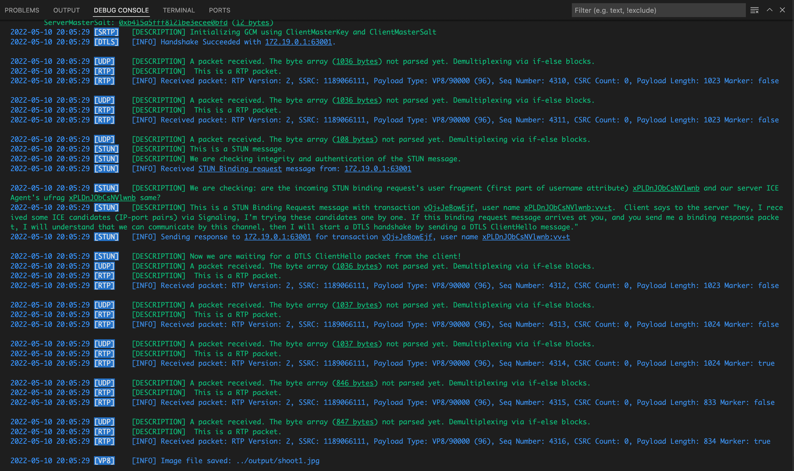

8. VP8 PACKET DECODE¶
In previous chapter, we decoded the SRTP packet and decrypted it successfully, also determined that this packet contains a VP8 video data part.
-
If the packet's PayloadType is in PayloadTypeVP8 type, it forwards to the UDPClientSocket's "vp8Depacketizer" channel. This channel is listened by Run() function of VP8Decoder object in backend/src/transcoding/vp8.go, shown below
-
Our VP8Decoder aims to process incoming VP8 RTP packets, catch and concatenate keyframe packets then convert the result to an image object and save it as a JPEG image file.
VP8 Payload Descriptor
0 1 2 3 4 5 6 7
+-+-+-+-+-+-+-+-+
|X|R|N|S|PartID | (REQUIRED)
+-+-+-+-+-+-+-+-+
X: |I|L|T|K| RSV | (OPTIONAL)
+-+-+-+-+-+-+-+-+
I: |M| PictureID | (OPTIONAL)
+-+-+-+-+-+-+-+-+
L: | TL0PICIDX | (OPTIONAL)
+-+-+-+-+-+-+-+-+
T/K: |TID|Y| KEYIDX | (OPTIONAL)
+-+-+-+-+-+-+-+-+
Our VP8 packet struct in backend/src/transcoding/vp8.go
from backend/src/transcoding/vp8.go
type VP8Packet struct {
// Required Header
X uint8 /* extended control bits present */
N uint8 /* when set to 1 this frame can be discarded */
S uint8 /* start of VP8 partition */
PID uint8 /* partition index */
// Extended control bits
I uint8 /* 1 if PictureID is present */
L uint8 /* 1 if TL0PICIDX is present */
T uint8 /* 1 if TID is present */
K uint8 /* 1 if KEYIDX is present */
// Optional extension
PictureID uint16 /* 8 or 16 bits, picture ID */
TL0PICIDX uint8 /* 8 bits temporal level zero index */
TID uint8 /* 2 bits temporal layer index */
Y uint8 /* 1 bit layer sync bit */
KEYIDX uint8 /* 5 bits temporal key frame index */
Payload []byte
}
- We used libvpx-go as codec, we didn't implement the VP8 codec.
from backend/src/transcoding/vp8.go
func (d *VP8Decoder) Run() {
newpath := filepath.Join(".", saveDir)
err := os.MkdirAll(newpath, os.ModePerm)
if err != nil {
panic(err)
}
packetCounter := 0
for rtpPacket := range d.src {
packetCounter++
vp8Packet := &VP8Packet{}
vp8Packet.Unmarshal(rtpPacket.Payload)
isKeyFrame := vp8Packet.Payload[0] & 0x01
switch {
case !seenKeyFrame && isKeyFrame == 1:
continue
case currentFrame == nil && vp8Packet.S != 1:
continue
}
seenKeyFrame = true
currentFrame = append(currentFrame, vp8Packet.Payload[0:]...)
if !rtpPacket.Header.Marker {
continue
} else if len(currentFrame) == 0 {
continue
}
err := vpx.Error(vpx.CodecDecode(d.context, string(currentFrame), uint32(len(currentFrame)), nil, 0))
if err != nil {
logging.Errorf(logging.ProtoVP8, "Error while decoding packet: %s", err)
currentFrame = nil
seenKeyFrame = false
continue
}
var iter vpx.CodecIter
img := vpx.CodecGetFrame(d.context, &iter)
if img != nil {
img.Deref()
outputImageFilePath, err := d.saveImageFile(img)
if err != nil {
logging.Errorf(logging.ProtoVP8, "Error while image saving: %s", err)
} else {
logging.Infof(logging.ProtoVP8, "Image file saved: %s\n", outputImageFilePath)
}
}
currentFrame = nil
seenKeyFrame = false
}
}
- If the function call succeeds,
- We call img.Deref() to convert decoded C structures as Go wrapper variables
- If everything has gone OK, save the image as a JPEG file by jpeg.Encode
- You can see your caught keyframes at /backend/output/ folder as shoot1.jpg, shoot2.jpg, etc... if multiple keyframes were caught.
- As you can see below, we received multiple RTP packets containing VP8 video data, in different packet lengths, then we caught a keyframe from these packets, concatenate them, then created and saved image.
- At the end of our journey, we saw the "[INFO] Image file saved: ../output/shoot1.jpg" log line! All of our these efforts are to achieve this....

Sources: